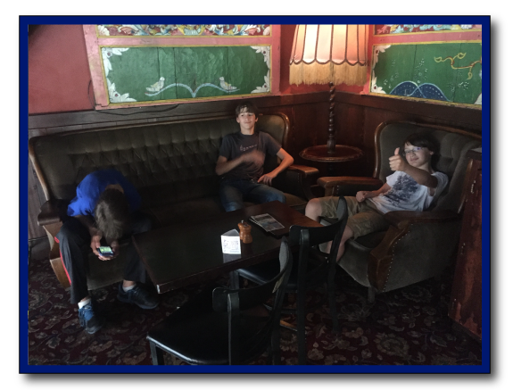
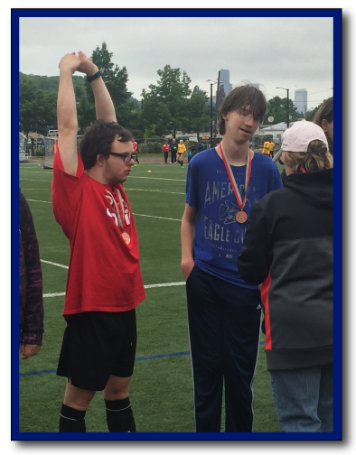
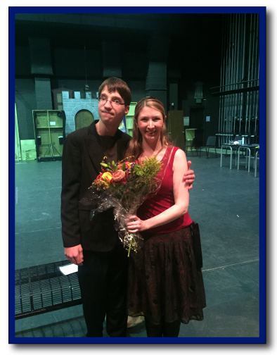
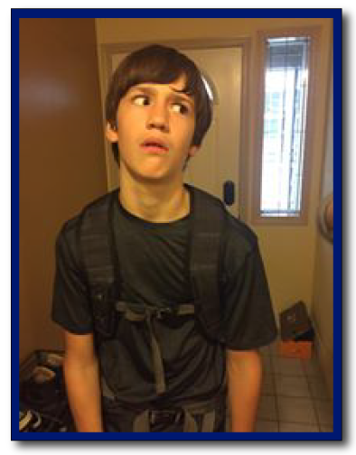
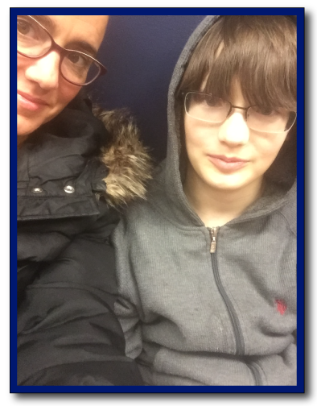
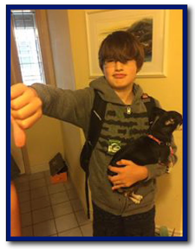
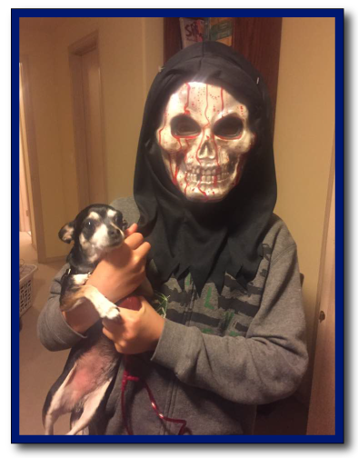
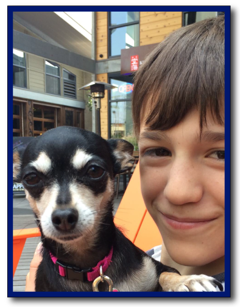
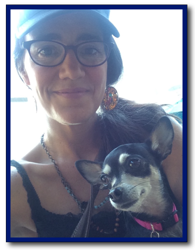

My Kids
Two summers ago we moved from Utah to Seattle and lived in a 400 square foot studio for two months in Capitol Hill, along with our pet rats. Needless to say it was a pretty crazy time. This picture was taken a couple of months ago while we were revisiting our old haunt, Six Arms in Capitol Hill, where we used to go for happy hour food, a cider for me and a chance to stretch our legs. On this last visit I was impressed by how much my kids had matured in the last two years. I didn't once have to yank them away from a dangerous on coming car.
Conner
Conner has played unified soccer for the special olympics two years in a row. Each time he has won bronze and this upsets him. He is such a fun kid. I'm very proud of him.
Conner with his favorite teacher after performing in "The Hound of the Baskervilles"
Dylan
Dylan swears he will never be in drama, loves coding and drawing. Kicks butt in math and karate.
First Day of School
Evan
First Day of School
Evan plays the guitar, flute, and is learning karate. Working towards learning how to make games.
Matilda Enters Our Lives
Last Year Matilda came to live with us. She was nervous at first as she is a rescue dog.
  